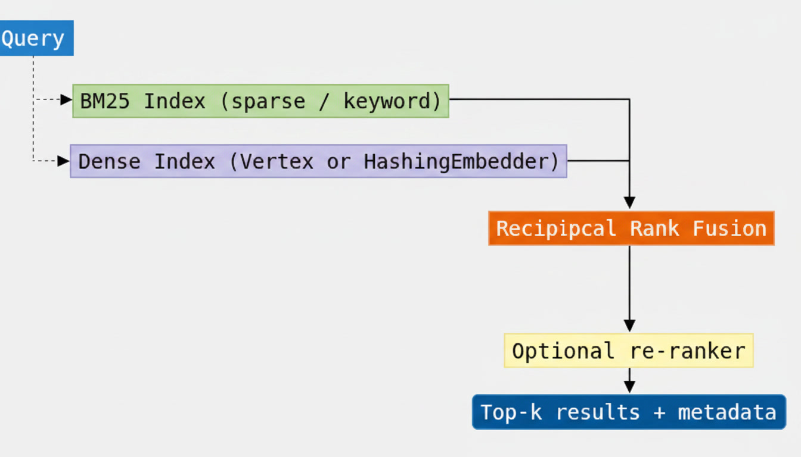

Lab 1.2 – Hybrid Retrieval + Custom Re-ranker Pipeline¶

Run in the browser with Google Colab or locally via Docker / VS Code.
Objective: Build a hybrid retrieval stack (dense + sparse) with Reciprocal Rank Fusion (RRF) and a lightweight re-ranking stage that measurably improves top-3 precision for DFD security policy checks.
This lab consumes the enriched corpus produced by Lab 1.1 and turns it into a production-ready retrieval component that later modules and the Capstone will call.
Learning Goals¶
By completing this lab you will be able to:
- Implement BM25 (sparse) retrieval that excels at exact control IDs and rare technical terms.
- Combine dense semantic search with sparse keyword search via Reciprocal Rank Fusion.
- Apply metadata pre-filters (asset_type, risk_tier, sdlc_phase, …) before or after fusion.
- Add a deterministic, auditable re-ranker that boosts exact control-ID and phrase matches.
- Measure precision@3 against a held-out set of DFD-related evaluation queries and demonstrate lift over a pure vector baseline.
Prerequisites¶
- Completed Lab 1.1 (enriched corpus available as JSONL or BigQuery table).
- Python 3.11+ environment.
- Optional but recommended: GCP project with Vertex AI API enabled (for real embeddings).
Install any missing packages:
Architecture Overview¶

Why hybrid?
| Signal | Strength for this domain |
|---|---|
| Dense (embeddings) | Semantic paraphrases (“unprotected flows across trust boundaries”) |
| Sparse (BM25) | Exact control IDs (SEC-DFD-014), rare asset names, regulatory language |
| RRF | Robust fusion without needing score calibration |
| Re-ranker | Final precision boost using domain-specific signals |
Starter Location¶
labs/01-chunking/
├── src/
│ ├── retrieval.py # HybridRetriever, BM25, RRF, re-ranker, eval helpers
│ ├── chunking.py # (from Lab 1.1)
│ ├── metadata.py
│ └── ingest.py
├── data/
│ ├── sdlc_handbook.md
│ ├── security_baseline.md
│ └── evaluation_queries.json # 12 DFD / security queries + ground truth
├── notebooks/
│ └── lab-1.2-hybrid-rerank.ipynb
└── tests/
└── test_retrieval.py
A complete reference implementation is already present. Your job is to run it, understand the moving parts, measure the precision lift, and optionally extend the re-ranker or swap in Vertex AI embeddings / Ranking API.
Step-by-Step Instructions¶
1. Ensure the Lab 1.1 corpus exists¶
from src.chunking import process_directory
from src.ingest import write_jsonl
corpus = process_directory("data")
write_jsonl(corpus, "output/rag_chunks.jsonl")
2. Explore the evaluation queries¶
Open data/evaluation_queries.json. Each entry contains:
- a realistic natural-language (or keyword) query a security architect might ask,
- the expected
control_id(s) that should appear in the top results, - optional asset-type hints.
These queries form the ground-truth set for precision@3 measurement.
3. Run the hybrid retriever¶
from src.retrieval import HybridRetriever, HashingEmbedder
retriever = HybridRetriever.from_jsonl(
"output/rag_chunks.jsonl",
embedder=HashingEmbedder(), # swap for VertexEmbedder when credentials exist
)
result = retriever.retrieve(
"Can an external entity write directly to an internal data store?",
top_k=3,
)
for hit in result.final_hits:
print(hit.rank, hit.control_id, hit.score, hit.record.section[:60])
4. Compare retrieval modes¶
The notebook and evaluation harness let you toggle:
| Mode | Flags |
|---|---|
| BM25 only | use_dense=False, use_rerank=False |
| Dense only | use_bm25=False, use_rerank=False |
| Hybrid (RRF) | use_rerank=False |
| Hybrid + re-rank | default |
Record precision@3 for each mode. You should observe a clear lift from hybrid + re-rank over pure dense or pure sparse on the provided query set.
5. Apply metadata filters¶
result = retriever.retrieve(
"trust boundary controls",
top_k=5,
asset_type="trust_boundary",
risk_tier=["critical", "high"],
)
Filtering before fusion is especially useful when the user has already narrowed the question to a particular asset type or risk tier (common in interactive DFD review tools).
6. (Optional) Switch to real Vertex AI embeddings¶
from src.retrieval import VertexEmbedder, HybridRetriever
embedder = VertexEmbedder(project_id="YOUR_PROJECT")
retriever = HybridRetriever.from_jsonl(
"output/rag_chunks.jsonl",
embedder=embedder,
)
7. Run the automated evaluation¶
from src.retrieval import load_eval_queries, evaluate_retriever
queries = load_eval_queries("data/evaluation_queries.json")
metrics = evaluate_retriever(retriever, queries, k=3)
print(metrics["mean_precision_at_3"])
Reciprocal Rank Fusion (reference)¶
where \(k = 60\) (the conventional constant) and \(\text{rank}_r(d)\) is the 1-based rank of document \(d\) in ranked list \(r\). RRF needs no score normalisation and is robust when the underlying retrievers produce incomparable score ranges.
Success Criteria¶
| Criterion | Target |
|---|---|
| Hybrid mean hit-rate@3 | ≥ 0.80 on the supplied evaluation set (HashingEmbedder) |
| Clear lift vs. single-signal baselines | Documented in notebook (hit-rate and precision) |
| Metadata filters work correctly | Filtered results respect the requested fields |
| Code is reusable | HybridRetriever can be imported by later labs / Capstone |
| Offline path works | Tests and notebook run without GCP credentials |
Validation Checklist¶
- [ ] Corpus from Lab 1.1 loads successfully
- [ ] BM25 returns relevant control IDs for keyword queries
- [ ] RRF fusion produces a sensible combined ranking
- [ ] Re-ranker improves or preserves precision@3
- [ ]
evaluate_retrieverreports mean precision@3 - [ ] Metadata filters restrict results as expected
- [ ] Unit tests pass (
pytest tests/test_retrieval.py -v)
Submission¶
- Push your notebook (with recorded metrics) and any extensions to a branch or fork.
- Submit the GitHub link via the Moodle Lab 1.2 assignment activity.
- Include a short note describing:
- precision@3 for BM25-only / dense-only / hybrid / hybrid+rerank
- any changes you made to the re-ranker or fusion parameters
- observations about when sparse signals dominate vs. dense signals
Tips for Security-Focused Practitioners¶
- Prefer deterministic re-rankers (or at least log the signals they use) when the output will feed a compliance decision.
- Always keep the original source section and control_id on every returned hit — the Capstone report depends on them.
- Metadata filters are a cheap and powerful way to reduce the candidate set before expensive re-ranking or LLM calls.
- When you later move the index to Vertex AI Vector Search or AlloyDB pgvector, the same
HybridRetrieverinterface can stay; only the dense backend changes.
Next: Week 2 will explore where to store this corpus at scale (Vertex AI Vector Search, AlloyDB pgvector, BigQuery, Graph) and the latency / cost / accuracy trade-offs of each option.